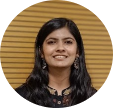

|
Noaima Bari
I am a Masters student at Georgia Insitute of Technology in the School of Electrical and Computer Engineering, where I am studying towards a specialization of Machine Learning.
Specifically, I am interested in Image processing and computer vision. My long term goal is to utilize computer vision in being the eyes of the visually impaired.
I completed my undergrad in 2021 in Electrical Engineering where I worked on studying transformer faults through thermal images as my major project. I received a gold medal for my academic performance here.
In my free time, I love art, writing, journaling and cooking. Recently, I have started learning how to play the Ukelele!
Email /
Resume /
Linkedin /
Github /
Google Scholar
|

|
|
|
Graduate Assistant | Georgia Institute of Technology
Atlanta, GA | Jan 23 - May 23
Grader for the course MUSI 6202: Digital Signal Processing for Music
Responsible for organizing quizzes and grading assignments for a class of 40 students
Tech Stack: MATLAB, Git
|
|
|
Software Engineer Intern | Altair Engineering Inc.
Troy, MI | Aug 22 - Dec 22
Worked with HyperWorks core development team to develop a user assisting tool for a simulation software
Utilized deep learning sequence modeling concepts to model user command history data
Utilized recurrent neural network (RNNs) to predict next command in a sequence
Developed a Graphical User Interface for displaying results
Tech Stack: Python, Pandas, TensorFlow, GUI
|
|
|
Software Engineer Intern | Revel Systems
Atlanta, GA | May 22 - Jul 22
Worked in an Agile Environment to build a menu engineering dashboard for QSRs to optimize their menu
Utilized AWS Lambda as the backend engine and AWS AppSync for a GraphQL API to serve requests
Performed statistical analysis on sales data and utilized PostgreSQL to query complex results
Contributed towards architecture and database designs for the project
Tech Stack: Backend: Go, GraphQL, AWS Lambda, AppSync, RDS, Frontend: React, Chart.js, JavaScript
|
|
|
Teaching Assistant - Machine Learning | Coding Ninjas
Delhi, India | Nov 20 - Mar 21
Conducted daily doubt sessions for undergraduate students in areas of machine learning, neural networks and data science
Graded assignments, evaluated projects and debugged python codes of over 200 students
Tech stack: Python, PyTorch, NumPy, Pandas, Scikit-learn, Selenium
|
|
|
Image Denoising Using Perona-Malik Diffusion Model
Project Report
Utilized different diffusion functions in the Perona-Malik diffusion model and derived corresponding PDEs
Evaluated CFL stability conditions, performed discretization and handled numerical instability
Implemented the algorithms and tested the result on images in terms of PSNR, MSE and Structural Similarity Scores
Tech stack: Python, NumPy; Concepts: Partial Differental Equations, Calculus of Variations
|
|
|
Automatic Detection and Grading of Diabetic Retinopathy from Color Fundus Images
Paper Link
Created a decision-making pipeline involving data augmentation, image processing, feature engineering and classification
Developed an ensemble model using CNN algorithms with an average MCC of 74%
Developed an explainable AI methodology using Grad-CAM for better interpretability of predictions for further clinical review
|
|
|
Idiomaticity Detection using Zero and One Shot Learning
Link
Performed data cleaning, preprocessing, EDA and feature engineering on Idioms Dataset from SemEval22 task
Fine-tuned pretrained Large Language Models (LLMs) in zero shot and one shot settings
Achieved F1 score of 0.73 and accuracy of 0.78 using XL-Net in zero shot settings.
|
|
|
Language Identification in Hindi English Code Mixed Short Text Messages
Paper
Developed a hybrid neural network model for language identification
Employed character embeddings, n gram features and a bi-LSTM for capturing both forward and backward context at a character level
Achieved an average F1-score of 96% using the proposed approach and lexicons dataset
|
|
|
Airline Booking Management System
Link
Created an airline booking management system using MySQL DBMS and Flask for backend
Performed Conceptual modelling using EER Diagram and Logical Mapping from conceptual to a Relational Data Model
Implemented queries for searching with filters, booking, retrieving, cancelling flights and generating reports
|
|
|
Buzzy Bowl (C++ and Multithreading)
Created a half time football show simulation using C++ with 3D graphics using OpenGL
Utilized Object Oriented Programming concepts for creation of entities and their functions
Added Multithreading using std::thread for running the simulation smoothly
|
This website is a modification of Jon Barron's website.
|
{kind=link}